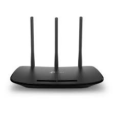
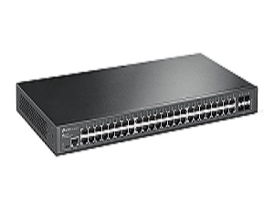
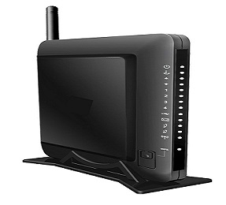
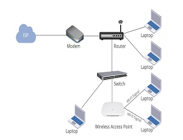
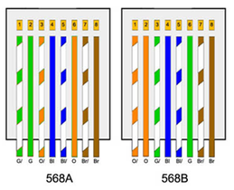

REDES
Comunicación entre Computadores
FUNDAMENTOS DE REDES
1.Introducción
-
Definición: Una red es un conjunto de
dispositivos (nodos) conectados entre sí para compartir recursos, datos y servicios.
-
Importancia: Hoy en día, las redes son la columna vertebral de la comunicación global,
desde una red Wi-Fi doméstica hasta la inmensidad de Internet.
-
Objetivo: Entender cómo viaja la información desde un punto A hasta un punto B de
forma eficiente y segura.
2. Modelos de Referencia: OSI y TCP/IP
Son arquitecturas que dividen el proceso de comunicación
en capas para facilitar su estudio y estandarización.
-
Modelo OSI (7 capas): Es un modelo conceptual y pedagógico.
-
Capas: Física, Enlace de datos, Red, Transporte, Sesión, Presentación y Aplicación.
-
Modelo TCP/IP (4 capas): Es el modelo real que usa Internet.
-
Capas: Acceso a la Red, Internet, Transporte y Aplicación.
-
Diferencia clave: OSI es un marco teórico; TCP/IP es la implementación práctica.
3. Protocolos de Red
Son las "reglas del juego" que permiten que los dispositivos se entiendan.
-
IP (Internet Protocol): Se encarga del direccionamiento y enrutamiento de paquetes.
-
TCP/UDP: Controlan cómo se envían los datos
-
HTTP/HTTPS: Para la navegación web.
-
DNS: Traduce nombres de dominio (google.com) a direcciones IP.
4. Topologías de Red
Es la forma física o lógica en la que se conectan los nodos.
-
Estrella: Todos se conectan a un nodo central. Es la más común hoy.
-
Bus: Todos comparten un solo cable
-
Anillo: Los datos viajan en círculo de un nodo a otro.
-
Malla: Todos están conectados con todos.
5. Software de Red y Simuladores
Herramientas para configurar, gestionar y probar redes antes de instalarlas físicamente.
-
Cisco Packet Tracer: Ideal para estudiantes; permite arrastrar dispositivos y ver cómo
fluyen los paquetes.
-
GNS3: Más avanzado; permite emular sistemas operativos reales de red.
-
Wireshark: Analizador de protocolos (para "ver" el tráfico real que pasa por un cable).
6. Dispositivos de Red (Hardware)
-
Router (Enrutador): Une redes diferentes y decide la mejor ruta para los datos.

-
Switch (Conmutador): Conecta dispositivos dentro de una misma red local (LAN).

-
Modem: Convierte la señal del proveedor de internet en una señal digital.

-
Access Point (Punto de Acceso): Permite la conexión inalámbrica (Wi-Fi).

7. Código de Colores
Para que el cable Ethernet funcione, los hilos internos deben seguir un
orden estándar en el conector RJ45.
-
Norma T568B
1. Blanco-Naranja
2. Naranja
3. Blanco-Verde
4. Azul
5. Blanco-azul
6. Verde
7. Blanco-Marron
8. Marron
-
Norma T568A
1. Blanco-Verde
2. Verde
3. Blanco-Naranja
4. Azul
5. Blanco-azul
6. Naranja
7. Blanco-Marron
8. Marron
